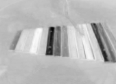
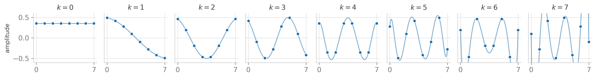
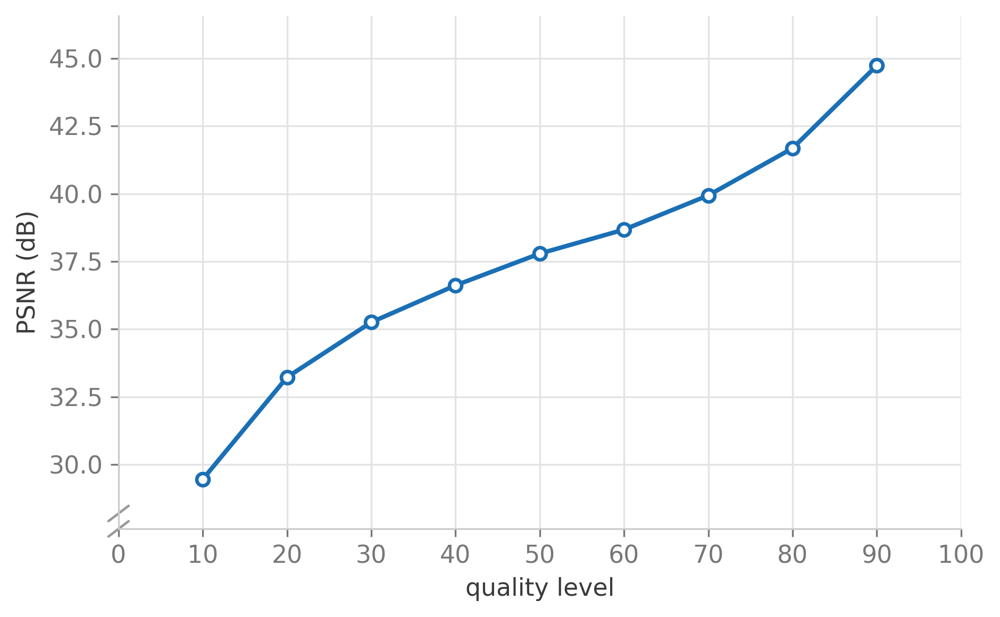
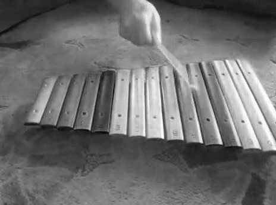
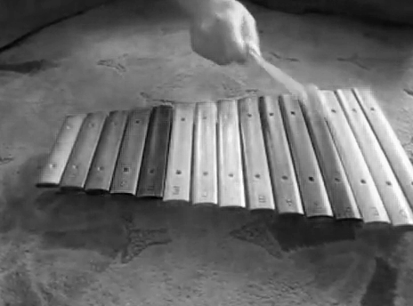
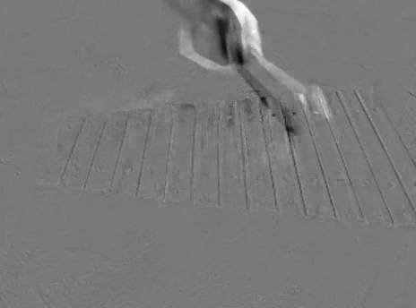
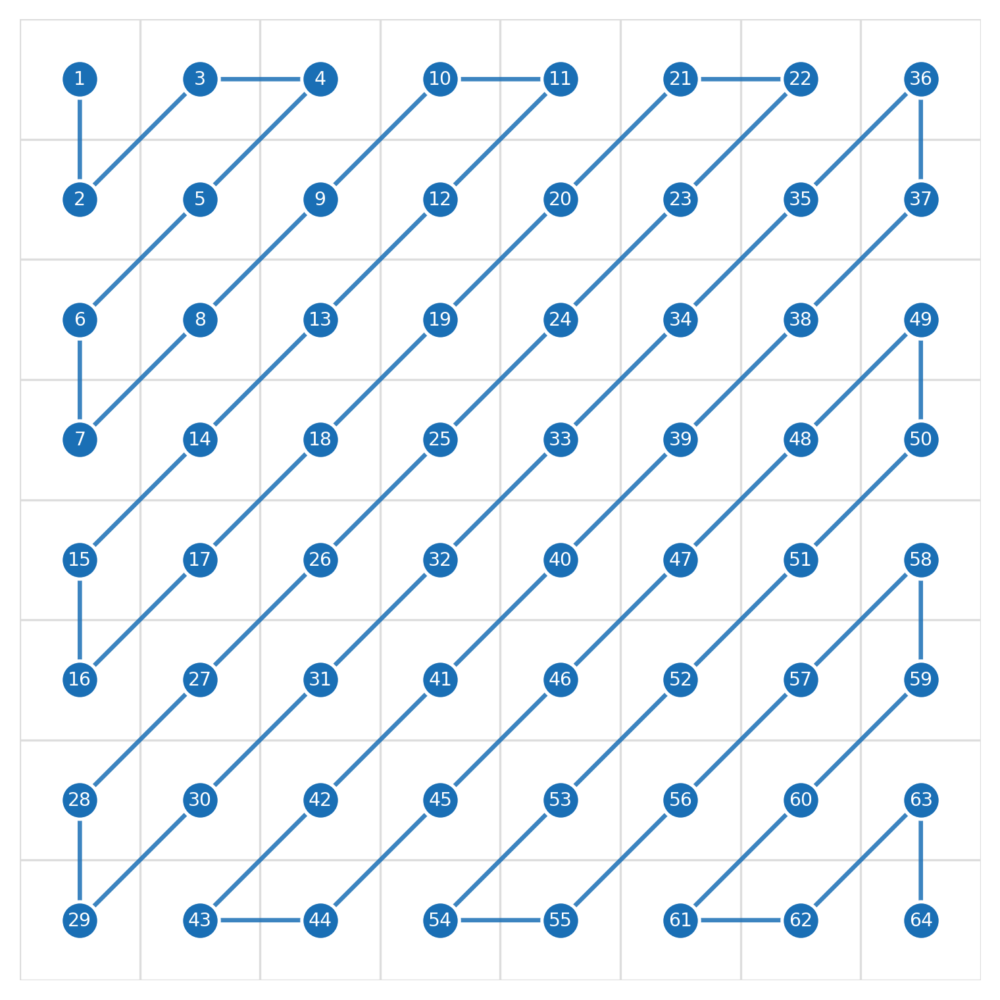
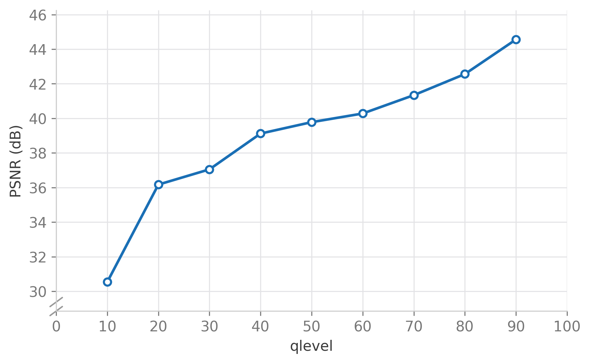
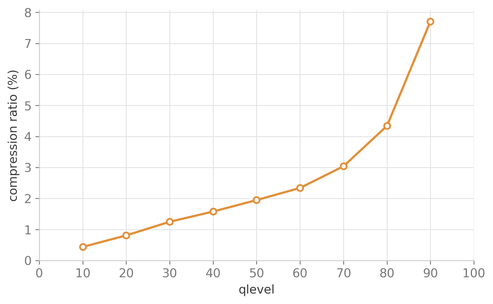

Digital images and video carry a lot of redundancy: neighboring pixels are usually similar, and consecutive video frames are often nearly identical. The JPEG standard exploits the first kind of redundancy by transforming small blocks of pixels into frequency space with the discrete cosine transform (DCT), discarding the frequencies the human eye is least sensitive to, and entropy-coding what remains. In this project we implement that pipeline from scratch in Python: an 8x8 DCT, a quality-adjustable quantization step, zigzag scanning with end-of-block coding, and Huffman coding, and use it to compress a single video frame. We then extend the same pipeline to a pair of consecutive frames by compressing their difference instead of the raw pixels, exploiting temporal as well as spatial redundancy, and measure how reconstruction quality and compression ratio trade off against each other as the quantization level changes.
A raw video frame stores one intensity value per pixel per color channel, with no regard for how alike neighboring pixels usually are. A patch of sky is hundreds of nearly identical pixels, each stored independently; a patch of grass is dozens of pixels that could largely be predicted from their neighbors. Video adds a second kind of redundancy on top of that: unless something in the scene moves, consecutive frames are nearly identical to one another.
JPEG compression, and the video codecs built on similar ideas, exploit both. A block of pixels is converted into frequency space with the DCT, where smooth image regions concentrate almost all of their energy into a handful of low-frequency coefficients. Coarsely quantizing the high-frequency coefficients, which mostly encode detail the eye is not very sensitive to, throws away information cheaply, while entropy coding squeezes what remains further without losing anything at all.
We implement two related pipelines in Python, building the second directly on top of the first:
We start from frame 80 of a short video clip and convert it from RGB to YUV. JPEG-style compression normally applies to all three channels, but we compress only the luma (Y) channel here: the grayscale component the eye is most sensitive to.

The discrete cosine transform represents a block of $N$ samples as a weighted sum of $N$ cosine basis functions of increasing frequency:
$$ b_k(n) = c_k \cos\left(\frac{\pi k (2n+1)}{2N}\right), \qquad c_k = \begin{cases} \sqrt{1/N} & k = 0 \\ \sqrt{2/N} & k > 0 \end{cases} $$for $n = 0, 1, \ldots, N-1$, with $N=8$ in our case. $c_k$ is just a normalization factor; the shape of each basis function is set entirely by $k$.

Taking the outer product of every pair of 1D basis functions gives the 64 2D basis patches an 8x8 image patch can be built from. Low-frequency patches, which vary slowly, sit in the top-left of the grid; high-frequency ones, which oscillate quickly in both directions, sit in the bottom-right.
The frame is cut into non-overlapping 8x8 patches, 2700 of them for our $360 \times 480$ frame, and each patch's pixel values are shifted from $[0, 255]$ to $[-128, 127]$ to match the basis patches' range. A patch's coefficient for a given basis pattern is then just the element-wise product of the two, summed over all 64 pixels; doing this for all 64 basis patches converts the pixel patch into 64 DCT coefficients.
Smooth, low-frequency patches end up with almost all of their energy concentrated in the top-left (low-frequency) coefficients. For example, the nearly flat patch below, with pixel values all around 33 or 34, produces the DCT coefficients on the right, only 6 of which are non-zero:
| 33 | 33 | 33 | 33 | 33 | 34 | 34 | 34 |
| 33 | 33 | 33 | 33 | 32 | 33 | 34 | 34 |
| 33 | 33 | 33 | 33 | 32 | 33 | 33 | 33 |
| 33 | 33 | 33 | 33 | 32 | 33 | 33 | 32 |
| 34 | 34 | 34 | 33 | 33 | 33 | 33 | 33 |
| 34 | 34 | 34 | 34 | 33 | 34 | 33 | 33 |
| 34 | 34 | 34 | 34 | 34 | 34 | 34 | 34 |
| 34 | 34 | 34 | 34 | 34 | 34 | 34 | 34 |
| -756 | 0 | 0 | 0 | 0 | 0 | 0 | 0 |
| -2 | -1 | 0 | 0 | 0 | 0 | 0 | 0 |
| 1 | -1 | 0 | 0 | 0 | 0 | 0 | 0 |
| 1 | 0 | 0 | 0 | 0 | 0 | 0 | 0 |
| 0 | 0 | 0 | 0 | 0 | 0 | 0 | 0 |
| 0 | 0 | 0 | 0 | 0 | 0 | 0 | 0 |
| 0 | 0 | 0 | 0 | 0 | 0 | 0 | 0 |
| 0 | 0 | 0 | 0 | 0 | 0 | 0 | 0 |
Quantization divides each coefficient, element-wise, by a fixed quantization matrix $Q$ and rounds the result. $Q$ has small values in the top-left and large ones in the bottom-right, so it barely touches low-frequency coefficients while aggressively rounding high-frequency ones towards zero, the frequencies the image usually has little energy in anyway and the eye is least sensitive to:
| 16 | 11 | 10 | 16 | 24 | 40 | 51 | 61 |
| 12 | 12 | 14 | 19 | 26 | 58 | 60 | 55 |
| 14 | 13 | 16 | 24 | 40 | 57 | 69 | 56 |
| 14 | 17 | 22 | 29 | 51 | 87 | 80 | 62 |
| 18 | 22 | 37 | 56 | 68 | 109 | 103 | 77 |
| 24 | 35 | 55 | 64 | 81 | 104 | 113 | 92 |
| 49 | 64 | 78 | 87 | 103 | 121 | 120 | 101 |
| 72 | 92 | 95 | 98 | 112 | 100 | 103 | 99 |
To make the compression level adjustable, we scale $Q$ by a quality level $q \in (0, 100)$ following a standard rescaling used by many JPEG encoders[4]:
$$ s = \begin{cases} 5000 / q & q < 50 \\ 200 - 2q & q \geq 50 \end{cases}, \qquad Q'_{ij} = \left\lfloor \frac{s \cdot Q_{ij} + 50}{100} \right\rfloor $$A low $q$ inflates $Q$, quantizing everything but the very lowest frequencies down to zero; a high $q$ shrinks it back towards 1, close to lossless. Quantizing the flat patch above at three different quality levels shows the effect directly: only the constant term survives at $q=10$, while $q=90$ keeps two coefficients.
| -9 | 0 | 0 | 0 |
| -47 | 0 | 0 | 0 |
| -252 | -1 | 0 | 0 |
Reconstructing a patch reverses the process: each quantized coefficient is scaled back up by its $Q$ value, multiplied by its corresponding basis patch, and the 64 results are summed and shifted back by $+128$ into the $[0, 255]$ range.
At quality level 50 the reconstructed frame is indistinguishable from the original to the eye, even though most of the 64 coefficients in every patch were quantized down to zero.

PSNR rises steadily with quality level, from about 29 dB at $q=10$ to almost 45 dB at $q=90$, with diminishing returns as $q$ grows: the biggest quality jumps happen at the low end, right where the quantization matrix is coarsest.
A single frame is only half the story: video also has a lot of redundancy between consecutive frames. Instead of compressing frame 85 directly, we compress the difference between it and frame 80, and reconstruct frame 85 by adding that difference back. If little has changed between the two frames, the difference is nearly flat, and flat patches are exactly what the DCT compresses best.



The difference frame is almost entirely flat gray (zero difference) except around the hand and mallet, the only part of the scene that moved between frames 80 and 85.
After quantization, most of a patch's 64 coefficients are zero, and the non-zero ones cluster near the top-left corner. Reading the 8x8 matrix out in a zigzag order, alternating diagonals instead of row by row, groups those zeros together at the tail of the resulting vector instead of scattering them throughout it.

Once the zeros are grouped at the end, end-of-block coding simply drops them: instead of transmitting all 64 values, we transmit only the non-zero prefix and let the decoder pad the rest with zeros. A typical patch's coefficients, quantized at quality level 75, shrink from a 64-long vector down to just 9 transmitted values:
| -98 | 0 | 0 | -3 | 5 | -3 | 0 | 1 | -1 |
The surviving coefficients are still stored as regular integers at this point, which is wasteful: values like 0, 1, and $-1$ show up far more often than large coefficients like $-128$. Huffman coding builds a binary codebook that assigns short codewords to common values and long ones to rare values, compressing the stream losslessly:
| value | 0 | -1 | 1 | -2 | 2 | -128 |
|---|---|---|---|---|---|---|
| code | 0 | 100 | 1111 | 11010 | 11000 | 1010 |
Combining quantization, zigzag scanning, end-of-block coding, and Huffman coding brings a raw 8x8 patch, 512 bits at 8 bits per pixel, down to an average of about 18 bits at quality level 75: a roughly 96% reduction, and considerably more at lower quality levels.
Reconstruction reverses every step in order: Huffman-decode the bitstream, pad each patch back out to 64 values, undo the zigzag scan to recover the 8x8 coefficient matrix, then unquantize and apply the inverse DCT as in Part 1. Assembling the resulting patches recovers the difference frame, which we add back onto frame 80 to reconstruct frame 85.
Frame 85, reconstructed purely from frame 80 and a heavily compressed difference frame, is again visually indistinguishable from the original.

The PSNR curve looks similar to Part 1's, but at low quality levels compressing the difference does noticeably better than compressing the raw frame: a mostly flat difference frame is less affected by coarse quantization. At high quality levels the two methods converge, since there is little left for quantization to discard either way.

The full pipeline, DCT plus quantization plus zigzag scanning plus end-of-block coding plus Huffman coding, uses only about 0.4% of the raw bit budget at quality level 10, rising to a still-modest 8% at quality level 90 as more coefficients survive quantization and need to be transmitted.
The full pipeline reconstructs both a single frame and a pair of consecutive frames with very little visible loss, at a small fraction of the original bit budget, which matches what makes JPEG and JPEG-style video codecs practical in the first place.
Compressing the frame difference rather than the raw frame worked well here because nothing in the scene moved very far between frames 80 and 85. Real video codecs handle larger motion with motion compensation: searching each block of the new frame for the best-matching block in the previous one, rather than always comparing the same pixel position. Without that, a panning camera or fast motion would produce a difference frame nearly as busy as the original, and this pipeline would compress it no better than a single frame.
We also only compressed the luma channel and worked with a fixed 8x8 patch grid, ignoring the chroma channels and the blocking artifacts a fixed grid introduces at low quality levels, both places a production JPEG or video encoder spends considerable additional effort.